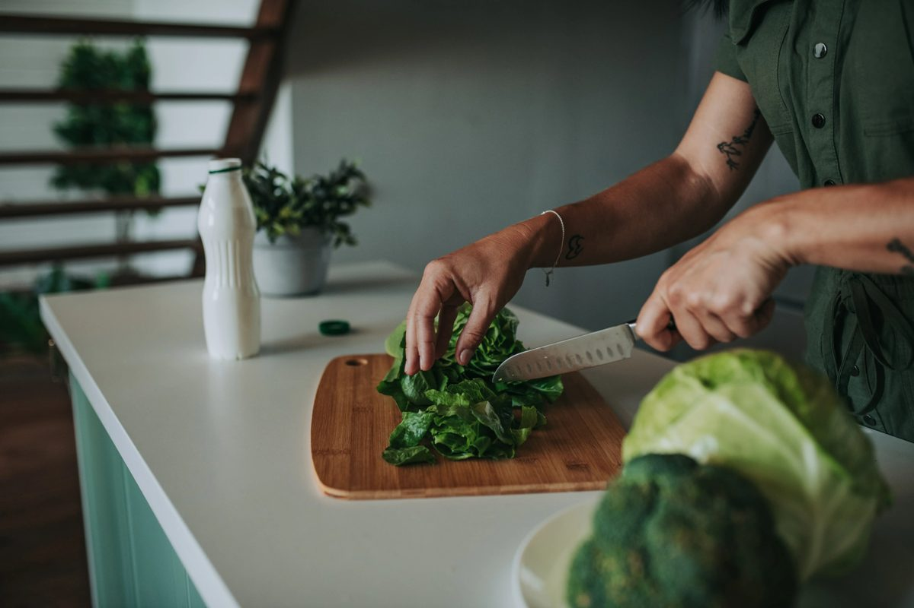

Healthy meals, zero fuss
Discover eight quick, whole-food recipes that you can cook tonight—no processed junk, no guesswork.
Start exploringWhat you’ll get
Whole-food recipes
Each dish uses everyday, unprocessed ingredients.
Minimum fuss
All recipes are designed to make eating healthy quick and easy.
Search in seconds
Filter by name or ingredient and jump straight to the recipe you need.
Built for real life
Cooking shouldn’t be complicated. These recipes come in under 30 minutes of active time, fit busy schedules, and taste good enough to repeat.
Whether you’re new to the kitchen or just need fresh ideas, we’ve got you covered.
